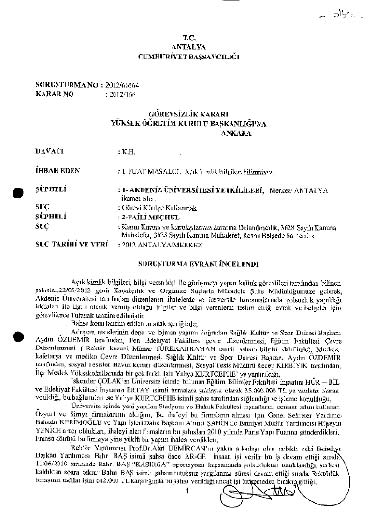
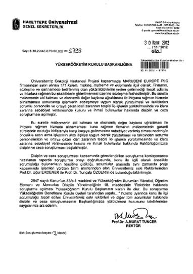
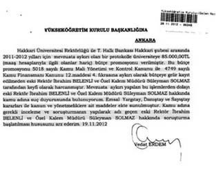
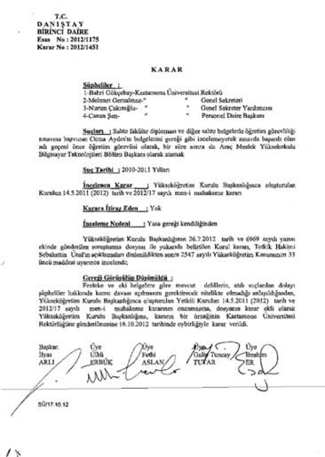
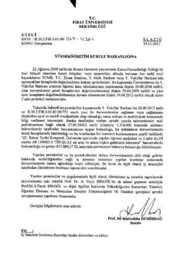

İstanbul Üniversitesi
İstanbul Üniversitesi’nin Ziraat Bankası Beyazıt Şubesi ile yaptığı protokol gereğince bankadan aldığı 1 milyon 537 bin TL’lik nakdi yardımın üniversite bütçesine aktarılmadığı, Rektör Prof. Dr. Yunus Söylet’in de promosyonlar karşılığı 431 bin 936 lira değerinde 6 Passat marka otomobille, 323 bin 501 liralık 1 BMW otomobil bağışını bütçe kalemine yazmadığı ifade ediliyor.
Sayıştay’ın yaptığı incelemeler sonucunda İstanbul Üniversitesi’nin 1 milyon 537 bin TL’yi muhasebe kayıtlarına girmediği tespit edildi.
Bu incelemeler sonucunda Ziraat Bankası’nın İstanbul Üniversitesi’ne 325 bin TL’lik bir adet BMW ve 431 bin TL’lik 6 adet otomobili bağışladığı ortaya çıktı.
İşte Yunus Söylet’in tespit edilen icraatları:
- İstanbul Üniversitesi ile Ziraat Bankası arasında yapılan protokol gereği alınan nakdi yardımların bütçe geliri olarak muhasebe kayıtlarına alınmadığı, alınan nakdi yardımların kullanımı konusunda ise mevzuat hükümlerine uyulmadığı belirlendi.
- Bankanın üniversiteye yazdığı yazıda vadesiz banka hesaplarında bulunan yıllık ortalama vadesiz tutarlar üzerinden ödenek tahsis edildiği, ayrıca 7 adet binek otomobilin üniversitenin vakfına verildiği ve üniversite için kullanıldığı belirtilmiş olup, bunun karşılığında üniversitenin yıllık 100 milyon TL vadesiz mevduat ortalaması oluşacak şekilde proje edildiği ve ödeneğin buna göre belirlendiği belirtilmiştir.
İstanbul Üniversitesi’nden konuyla ilgili olarak yapılan açıklamada ise, “Medyada ‘RedHack’in yayımladığı belgeler’ doğrultusunda İstanbul Üniversitesi ile ilgili yayımlanan haberlerde yer alan bilgiler kesinlikle doğru değil ve yanıltıcıdır” ifadelerine yer verildi.
Açıklamada şöyle denildi:
“İstanbul Üniversitesi ile ilgili yayımlanan haberlere konu olan 2009 yılına ait belgeler üzerinde Sayıştay denetçileri tarafından tam inceleme yapılmıştır. İnceleme ile ilgili olarak Sayıştay’a yazılı ve belgeli açıklamalar yapılmıştır. Sayıştay 3. Daire tarafından yapılan inceleme neticesinde ‘Yapılan harcamaların usulüne uygun olduğu’ Sayıştay ilamı ile anlaşılmıştır.
Haberlerde geçen 6 adet Passat ve 1 adet BMW marka araç İstanbul Üniversitesi’ne hibe edilmiştir. Bu araçlar İstanbul Üniversitesi’ne aittir. Araçlar için Maliye Bakanlığı’na yazı yazılmış ve 3 adet Passat ve 1 adet BMW marka araç Bakanlar Kurulu kararıyla İstanbul Üniversitesi Taşıt Cetveli’ne (T Cetveli) kaydedilmiştir. Diğer 3 adet Passat marka aracın ise bütçe olanakları nedeniyle İstanbul Üniversitesi T Cetveli’ne kayıt işlemleri 2013 yılında gerçekleştirilecektir.
Haberlerde yer alan Çapa ve Cerrahpaşa Tıp fakültelerinin otoparkları, İstanbul Üniversitesi Sosyal Tesisleri tarafından işletilmektedir. İÜ Sosyal Tesisleri tarafından 2009-2012 tarihleri arasında İstanbul Üniversitesi’nin bütçesine kira geliri olarak toplam 4 milyon 439 bin 333 TL yatırılmıştır. İÜ Sosyal Tesisleri’nin kira gelirleri ve kârı yıllık olarak İstanbul Üniversitesi’nin bütçesine aktarılmaktadır.”

Akdeniz Üniversitesi
RedHack’in yayımladığı Akdeniz Üniversitesi’ne ait belgelerin arasında, üniversiteyle ilgili “ihaleye fesat karıştırmak” iddiaları üzerine 2010’da Antalya Cumhuriyet Başsavcılığı tarafından başlatılan ancak 21 Mart 2012 tarihinde kovuşturmaya gerek olmadığına karar verilen soruşturma dosyası da bulunuyor.
Dosyadaki yolsuzluk iddiaları daha önce CHP Denizli Milletvekili İlhan Cihaner tarafından verilen bir gensoru önergesi ile Meclis gündemine taşınmıştı. Cihaner, Maliye Bakanı Mehmet Şimşek’ten Akdeniz Üniversitesi’ndeki yolsuzluk iddialarını yanıtlamasını istediği gensoru önergesinde, Akdeniz Üniversitesi Rektörü İsrafil Kurtcephe’nin ev aldığı inşaat firmasına üniversitenin inşaat işlerinin verilmesi, 800 bin liralık yeni makam aracı ve rektörlükle ilgili iddiaları soruşturan cumhuriyet savcısının rektörlük misafirhanesinde kaldığı yönündeki iddiaları gündeme getirmişti. Üniversite aleyhine açılan idari davaların aynı mahkemeye düştüğü ve bu mahkemede görevli hâkimlerle Teknokent hukuk müşavirinin akrabalık bağı olduğu iddialarını Meclis gündemine taşıyan Cihaner, üniversite misafirhanesinde kalan cumhuriyet savcısı olup olmadığını sorgulayarak, “Hakkında bunca iddia bulunan yöneticilerle ilgili etkin bir adli soruşturma, özellikle mal varlığı soruşturması niçin yapılmamıştır? Yapılmış ise sonuçları nelerdir?” sorularını yöneltmişti.
Akdeniz Üniversitesi’ndeki çok sayıda yolsuzluk ve usulsüzlük iddialarının bulunduğu soruşturma dosyalarını da içeren RedHack dosyalarında, Cihaner’in gensoru önergesinde öne sürdüğü akrabalık bağlarına ilişkin çeşitli ayrıntılarla bilgisayar alımı ve benzeri iddialara ait belgeler de yer alıyor.
RedHack’in yayımladığı Akdeniz Üniversitesi’ne ilişkin belgeler arasında, üniversitenin bazı birimlerine ilişkin inşaat işleri, Olbia Çarşısı’ndaki dükkânların ihaleleri ve 880 adet dizüstü bilgisayar alımına ilişkin yolsuzluk iddialarını içeren detaylar bulunuyor. Üniversite paralarının bir bankanın hesabında tutulması karşılığında Rektör Kurtcephe’nin kardeşi Y.K.’ye banka şubelerinin tamirat işlerinin verildiği iddiasının yer aldığı belgelerde, aynı bankanın üniversitenin bir yöneticisini 10 günlük transatlantik gezisine gönderdiği öne sürülürken, üniversitenin başarı seviyesinin son 3,5 yıl içinde 18. iken 27. sıraya düştüğü notu dikkat çekiyor.
RedHack’in yayımladığı Akdeniz Üniversitesi’ne ait belgeler arasında dikkat çeken bir başka iddia ise Yabancı Diller Yüksek Okulu’nda yaşandığı öne sürülen yolsuzluklar. Derse girmeyen bazı yöneticilerin hesabına derse girmiş gibi her ay para yatırıldığı öne sürülen belgelerde, bu bölümde görevli olmayan 5 kişinin okutman olarak listeye dahil edilip yine derse girmedikleri halde hesaplarına para yatırılarak devletin zarara uğratıldığı iddialarına yer veriliyor.
Kadın erkek bazı üst düzey yöneticilerin arasında çıkar birlikteliği ve “yakın ilişki” içinde olduğu iddialarına yer verilen belgelerde, Rusça derslerine giren Rus uyruklu E.G.’nin, gündüz derse girmesine rağmen gece tarifesinden maaş aldığı, ancak gece derse giren diğer iki okutmanın gündüz tarifesinden ücretlendirildiği öne sürülürken, E.G.’nin üniversitenin üst düzey bir yöneticisi ile yakın birlikteliğinin bulunduğu da dikkat çeken iddialar arasında.
Ankaralı mafya reisi İskender Çolak’ın adının da çeşitli inşaat ihaleleriyle anıldığı belgelerde, üniversite bünyesinde yeni yapılan stadyum ve hukuk fakültesi inşaatlarının “cemaat” adını kullanan Özyurt ve Simya adlı şirketlere verildiği iddialarına yer veriliyor.

Hacettepe Üniversitesi
Hacettepe Üniversitesi’nin yeni rektörü Prof. Dr. Murat Tuncer’in, bir önceki rektör Prof. Dr. Uğur Erdener ve ondan önceki rektör Prof. Dr. Tunçalp Özgen hakkında YÖK’e yolsuzluk yaptıkları iddiasıyla suç duyurusunda bulunduğu belirtiliyor.
RedHack’in yayımladığı belgede, Hacettepe Üniversitesi eski genel sekreteri Prof. Turhan Menteş’in üniversite gelirlerini Hacettepe Üniversitesi Gençlik ve Spor Kulübü Derneği hesabına aktararak yolsuzluk yaptığı iddiası yer alıyor.
Belgelere göre, dernek ile Coca-Cola arasında 4 Mayıs 2011’de yapılan 5 yıllık sözleşme gereği, Coca-Cola derneğe 250 bin TL ödeme yaptı. Sözleşme, Hacettepe Üniversitesi adı altında işletilecek tüm satış noktalarında Coca-Cola ürünleri satılmasını içeriyor. İncelemede, derneğin üniversite adına böyle bir sözleşme yapmasının hukuksuz bir işlem olduğu tespit ediliyor.
Sözleşmeyi dernek adına dönemin genel sekreteri ve dernek başkanı Menteş imzalıyor. Hukuk müşavirliğince hazırlanan raporda, üniversite iktisadi işletmesine kaydedilmesi gereken gelirin kulübe alınmış olmasından dolayı genel sekreterin “görevini kötüye kullandığı” değerlendirmesi yapılıyor. Belgede, dernek ile ilgili düzenlenen bir başka raporda da üniversitenin Hemodiyaliz Servisi’nde yıllık 60 bin adet kullanımı olan 6 litrelik polietilen diyaliz bidonlarının 2011 ve daha önceki yıllarda satılarak, derneğe bağış adı altında para alındığı ifade ediliyor.
Belgede, Rektör Prof. Murat Tuncer’in, Menteş ve yine dernek adına bağış kabul eden Genel Sekreter Yardımcısı Durmuş Demirci için disiplin soruşturması açtırdığı ve her iki ismin de “aylıktan kesme” cezasına çarptırıldığı belirtiliyor.

Hakkâri Üniversitesi
Hakkâri Üniversitesi’nde üniversiteye protokolle verilen 85 bin TL’lik bütçe promosyonunun eski rektör İbrahim Belenli ve Özel Kalem Müdürü Süleyman Solmaz tarafından bütçeye gelir kaydedilmeden harcandığı belirtildi.

Kastamonu Üniversitesi
Kastamonu Üniversitesi’nde yaşanan olaysa pes dedirtecek bir diğer skandal. Buna göre üniversite rektörünün de suçlandığı soruşturmada, sahte diplomalı Cuma Aydın adlı kişi önce akademisyen olarak atanırken, daha sonra Meslek Yüksek Okulu’na Bilgisayar Teknolojileri bölüm başkanı yapıldı.
Hiçbir inceleme yapmadan akademisyen olarak atayan, bununla da yetinmeyerek bölüm başkanı yapan Kastamonu Üniversitesi yönetimi ve rektörlüğü ise bu konuda bir suçlarının ve ihmallerinin olmadığını ileri sürdü. Oysa aynı başvuru Mustafa Kemal Üniversitesi’ne de yapılırken, üniversite bu belgelerin sahteliğini tek bir telefonla ortaya çıkarmıştı.
Konu ortaya çıkınca olayla ilgili yargılanan rektör suçsuz bulunurken, kısa süre sonra da emekliliğini istedi.

Fırat Üniversitesi
Fırat Üniversitesi ile ilgili yayımlanan belgelerde ise öğrenci harçlarının yatırıldığı Vakıf Bankası’nın verdiği promosyon gelirlerinin 480 bin TL’lik kısmının üniversitenin eski rektörü Prof. Dr. A. Feyzi Bingöl için alınan Audi A8 marka araca harcandığı ifade ediliyor. Konu ile ilgili mevcut rektör, YÖK’e gönderdiği yazıda bir önceki rektör hakkında soruşturma açılmasını istiyor.
Fırat Üniversitesi Rektörü Prof. Dr. Kudbettin Demirbağ imzası ile YÖK’e gönderilen yazının tarihi 19 Kasım 2012. “Gizli” ibareli yazının konusu soruşturma istemi. Mevcut rektör Prof. Dr. Demirbağ, eski rektör Prof. Dr. A. Feyzi Bingöl hakkında soruşturma yapılmasını istiyor. Gerekçe ise, üniversite hesaplarında yapılan bir dizi usulsüzlük. İddiaya göre, üniversite zarara uğratıldı.
“Fırat Üniversitesi İç Denetim Birimi”nin hazırladığı rapora ilişkin gönderilen üst yazıda öğrenci harçlarının yatırıldığı bir banka ile yapılan protokole ilişkin bilgiler yer aldı. Konuya ilişkin bankadan gelen yanıta göre, üniversitenin, 27 Eylül 2009 itibari ile 1 milyon 310 bin liralık promosyon hakkını kullanmak istediği anlatıldı.
Rektör Demirbağ imzalı yazıya göre söz konusu miktar, üniversite hesaplarında görülmedi. Yazıda söz konusu paranın bir bölümü üniversite şenlikleri için kullanıldı, aynı paradan 1 adet Audi marka A8 Long 3.0 model araç alındı. Yapılan bu iki harcama sonrası hesapta 823 bin 89 TL kaldı.
Raporda, yapılan denetimler sonrası protokoller sonrası elde edilen gelir konusunda üniversitenin zarara uğratıldığı anlatıldı.
Türkiye’de satılan en pahalı otomobiller arasında gösterilen Audi A8 Long’un satış fiyatı 480 bin TL seviyesinde. Söz konusu modelden, Türkiye’de geçtiğimiz yıl 130 kadar aracın satıldığı öğrenildi.